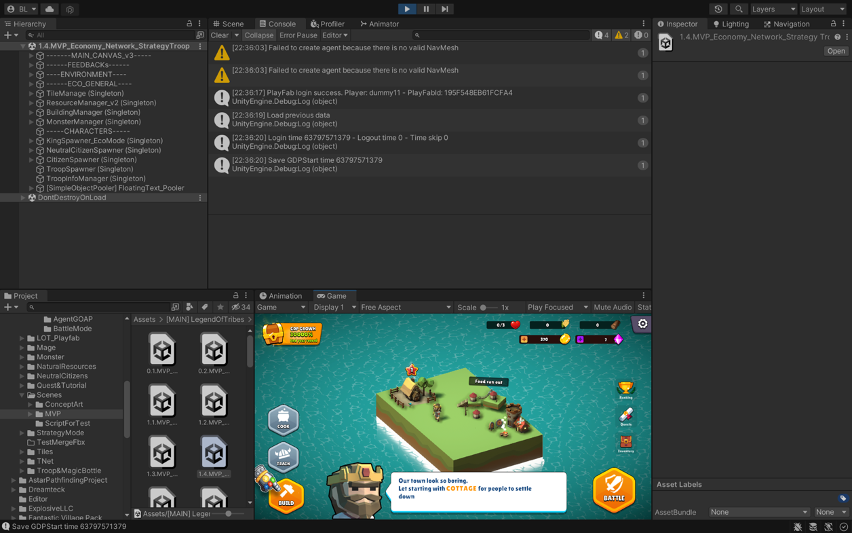
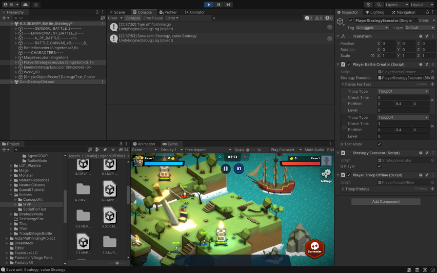
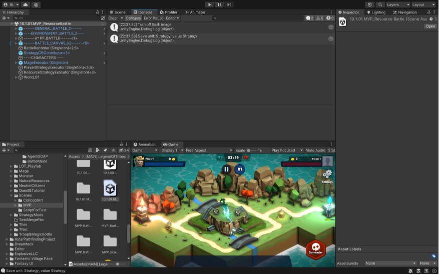
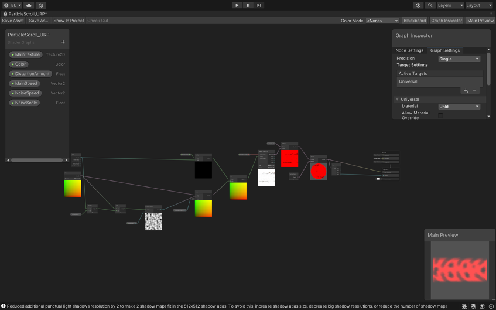
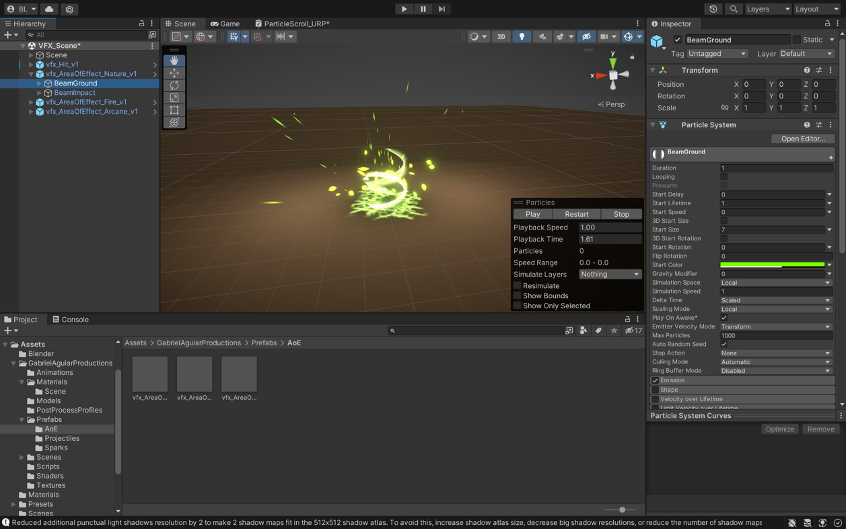

GENERAL INFORMATION
Enter the enchanting realm of 'Legend of Tribe,' where I, a seasoned game programmer, designer, and storyteller, have left my mark. My primary goal has always been to create an immersive player experience. To achieve this, I've carefully designed the gameplay and AI system, utilizing advanced Goal-Oriented Action Planning (GOAP) techniques. As the driving force behind the game's development, I've painstakingly crafted a seamless balance between gameplay, the tutorial system, and the reward structure, ensuring they all work in perfect harmony.
- Github: Legend of tribes github
Demo video: Legend of tribes trailer video
Screenshots
  
MY CONTRIBUTION
-
Game programmer: Applying GOAP as a core AI system for NPCs; gameplay programming; setting up a saving system using a MySQL database and an on-device backup.
-
Game economics: Design game economy based on economic principles; calculate and balance between in-game rewards and expensive; motivation and feeling design
-
Game designer:> Gameplay and game mechanic design; level design; character design.
-
Technical Artist: Arrange lighting sources and handle lighting for game levels; design and implement particle system; feedback system design.
WHAT I TOOK AWAY
Coding
I'm following a dedicated learning journey to develop my IT skills. It all starts with building a strong foundation by mastering essential programming concepts like Object-Oriented Programming (OOP), design patterns, unit testing, and refactoring. Once I've solidified these skills, I'll move on to more advanced topics, including diving deeper into Data Structures and Algorithms. Looking ahead, my learning path includes exploring concepts such as Entity-Component-System (ECS) and delving into the world of databases. This is how I'm shaping my journey to become a proficient programmer.
Goal-Oriented Action Planning (GOAP)
What I need to do better
-
Performance
Minimize the number of world state variables. Most of the boolean states must folder into one enumeration
Keep plan length short: Move logic out of the planner into other systems; the planner does not need to do everything; Let other specialized systems take some of the burden Turn from low-level design to high-level design
-
Upgrade to Dynamic system
Enable Goal to mark a child Action as completed before the child Action completes on its own The RangedAttack Action might require that the client must be within 5m of a tar-get, and then monitor the status of the target to force GoTo Action to terminate early.
Enable Goal to dynamically change the requirements while child Action is still in progress When the target moves, it can change the requirement end position for child Action, or tell it to move to a new destination that just became available or viable. This often force Actions to monitor their requirements dynamically to make sure they are still achievable.
-
Evaluating and communicating the Plan’s state
Goal or Action can monitor the status of the Plan while child Actions are still running and cause it to abort A parent Action or Goal could determine the target is no longer valid (Agent are dead or its intended target is no longer available) or it is no longer the best target.
The Goal can also use its awareness of the current state of the Plan to communicate with other NPCs Notify other NPCs when GoTo Action is running.
Actions do not necessarily need to be completed as soon as they have completed one iter-ation of the required Action The RangedAttack Action can turn into allowed to take sev-eral shots while it is still in available range.
-
Evaluating and communicating the Plan’s state
Goal or Action can monitor the status of the Plan while child Actions are still running and cause it to abort A parent Action or Goal could determine the target is no longer valid (Agent are dead or its intended target is no longer available) or it is no longer the best target.
The Goal can also use its awareness of the current state of the Plan to communicate with other NPCs Notify other NPCs when GoTo Action is running.
Actions do not necessarily need to be completed as soon as they have completed one iter-ation of the required Action The RangedAttack Action can turn into allowed to take sev-eral shots while it is still in available range.
--> I just replan for each shot but do not reuse the state that is still available when the Agent stands right at the place to conduct RangedAttack multiple times.
The GOAP system can keep track of success rates for Goals and Actions and can turn to use that to influence planning Require different GOAP settings for different NPC types. For example, a melee NPC increases its success rate of Melee Attack and turns to allow its Me-lee Attack Action lowering the cost from each success slash it conducted.
Use a Behaviour Graph to drive Goal selection, rather than prioritize a list of Goals. This en-ables the designer to create tree- or DAG-like logic for Goal selection depending on the current status of NPCs. For example, an NPC in a pre-combat state might have only one Goal to consider (with a logic to cause certain Goals to be evaluated only in certain situations), and another set of Goals for higher alert levels, including higher-customized logic for Goal evaluations in combat situations.
GOAP architecture
Technical art
My journey in mastering the art of creating visual effects for Unity games begins with a comprehensive study of VFX design, starting from the very basics and progressing towards a polished end product. The next crucial step is the development of a particle system, which is the key to translating my design ideas into captivating visual experiences. To achieve this, I recognize the importance of mastering several prerequisites that form the foundation of this VFX section, including Shader Graph, material design, trails, and particle systems.
Design visual effect
Build material with Shader graph
Create visual effect based on the design
© BinhLai, 2021